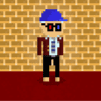
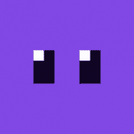

Punk Domain Punk Domains 允许您注册附加到您的帐户地址的域名。 为什么会有人需要它？好吧，你的加密地址很难记住。它以 开头0x，然后以 40 个随机字符（从 to 的数字和从to
Pyro's RPS Battle 什么是PIPEFLARE？我们是一个由 Flare Token 提供支持的以游戏赚钱的加密游戏网站。您可以玩游戏，从我们的 PipeFlare 水龙头收集免费加密货币，参与空投，参加
QQS Metaverse QQS 是一个社区驱动的计划，专注于 Web3 解决方案。它旨在为社区提供前所未有的 VR 体验，将用户聚集在一个身临其境且引人入胜的环境中。 其 Metaverse 计划 QQ World 将以购物
PolyCub PolyCUB 是一个收益优化器平台，它为 DeFi 用户提供了一种安全便捷的方式来发现 Polygon 网络上的收益和赚取收益。 该平台由 LeoFinance 项目构建，该项目在过去 3 年中在加密领域构
PolyCuppa Finance PolyCuppa Finance 是 Polygon Matic 网络上的一个新的 DeFi 项目。这是 PolyBrew 项目的第三层，以 CUPPA 为特色，最大供应量为 50,000 个代币。 在审查了几种单产农业模式后，我们决定在我们的平台上采
POLYDeFi POLYDeFi 是在 Polygon 网络上运行的透明的下一代分层 IFO 启动板。通过 POLYDeFi，投资者可以以最安全的方式参与独家 IFO 发布。POLYDeFi 将始终专注于他们
POLYDEFY PolyDefy 通过引入完全通缩的农业代币经济学彻底改变了农业。每笔交易征收 10% 的税，交易价值的 4% 用于农业奖励， 1.5% 对持有人、2% 给非永久性损失保险 (ILI) 基金、2
PolyDEX PolyDEX 是 Polygon Network 上最新的 AMM。它旨在成为支持多链IDO和IFO的首选平台。在 PolyDEX 上启动的项目将受益于广泛的服务，包括 Staking Pools、Trading Ba
PolyDice PolyDice是 EOSPOLY 团队在 EOS 上的第一款 DeFi & Dice 游戏。总计10万亿BOND代币，全部由EOS、CASH挖出。越早加入，获得的代币越多！ POLYD
PolyDino PolyDino Finance 是 Polygon 上的一个新 DeFi 项目，采用通货紧缩代币模型，最大供应量为 64,000 个 DINO 代币。 在审查了几种单产农业模式后，我们决定在我们的平台上采用低排放率、低供
Polydoge Staker 2022 年最佳收益质押 Dapp，Polydoge Staker 365 天。一份稳定的智能合约，不会像其他 Staking Dapps 那样迅速消失。只有在 Polydoge Staker 上，您才能获得 365 天奖励，每 24 小时
PolyDragon 伟大的 DeFi 团队关于加密世界的所有愿望的 IDEAL 项目：a)龙之巢穴，向 DGold 代币持有者支付 USDC 股息基金 b) NFT 游戏：我们正在创造最好的 Dragon Legends NFT 游戏！c)奖励 APR
PolyDragon Finance $FIRE 为我们革命性的质押池和收益农场提供动力。它利用专门的 RFI 代币结构实现无限池奖励，同时保持固定供应。作为 RFI 代币，$FIRE 使用一个公平的系统，
PolyDyson Poly Dyson，基于 Polygon 的上一代单产农业，具有聊天功能。Polygon 链最初是以 Matic 为名推出的一层网络。在推出时，Matic 打算成为一个 &ldqu
PolyEagle PolyEagle是一个基于 Goosedefi 的 Polygon 网络上的 Yield Farming 协议，具有燃烧机制、NFT、彩票等附加功能。Yield farming可以为加密货币持有人提供A
PolyFalcon Finance PolyFalcon Finance是使用 Polygon-Matic 网络上 DeFi 中最好的农场的 Yield Farming 应用程序。在 PolyFalcon 上投注并赚取更多。Yield farming可以为加密货币持有人提供APY（年
PolyFractal Trade Fractal Trade 是一个 Yield Farming 平台，为用户提供与原生 FIT（Fractal Investment Token）代币相关的所有活动的一站式服务：购买、出售、质押、在 Polygon 上赚取收益！ FIT
Polyfrenchie Finance POLYFRENCHIE是第一个随机锁定的多链收益农业平台，Polyfrenchie Finance 是一个在币安智能链和 Polygon 上运行的去中心化多链农场收益项目
PolyGaj Finance Polygaj 是围绕两个代币 GAJ 和 GMAM 构建的 DeFi 和 NFT 产品生态系统中的第一个产品。 GAJ 代币旨在成为 DeFi 产品系列的核心，Polygaj 是第一个 dapp。其他产品将在未
Polygalaxy Finance Polygalaxy Finance是一个在Polygon 上的多星系产量农场！通过收益耕作赚取 $GALAXY，然后将其投入矿池以赚取更多代币。 由于 POLYGALAXY 正在为 Polygon 网络
PolyGame Dapp PolyGame Dapp 社区是关于游戏、加密教育及其机制的。 PolyGame 基于跨链 Polygon 和 BSC 网络，如何桥接 BSC 和 Polygon，反之亦然，如何在农业及其奖励中进行质押，以赚取收益
PolyGamma Finance PolyGamma Finance 是 PolyAlpha Finance 的社区主导的稳定收益农业协议的第二层 (L3)，该协议专门建立在 Polygon 生态系统上。对于高水平的安全和保障，PolyBta Finance 是： ✅由 PALADIN 审核
PolyGhost Finance PolyGhost Finance 是一种基于 Polygon 网络的新型 Yield Farming 协议，在安全和投资方面开发了强大的功能，以提供最好的经验。该农场的设计理念是提供一个安全而简单的投资平台，具有
PolyGoat Finance PolyGoat 是一个全新的DeFi项目，由经验丰富的开发团队设计，是Polygon上的第三代通缩收益农场。 Polygon 一直专注于其用户和开发者的体验。自重塑品牌以
Polygold Finance Polygold Finance是一个基于 Polygon/Matic 链的创新加密货币投资和收益农业平台，旨在通过将存款费用用于低风险投资来创建一个具有可持续、长期增长的生态系统。这
Polygon Matic Miner MATIC 每天 3% 的投资回报率，使用 MATIC 购买矿机，永远每天赚取 3%。 矿工每天支付 3%，根据当前的挖矿效率。随着您和其他玩家雇佣矿工、复合收益和口袋 MAT
Polygon Monsters Polygon Monsters是一款怪物战斗游戏，玩家与他们的怪物战斗，每次他们赢得战斗时，他们的 Matic 都会获得 60% 的回报，每日奖金发放给最活跃的玩家。
Polygon POS Bridge Polygon POS Bridge是一个建立在以太坊上的全球可持续 Web3 基础设施。将跨链资产带入 Polygon 链的安全、快速、最安全的方式。支持在Polygon 网络上发送和接
Polygonapes Polygon mint 上的无聊猿游艇俱乐部。PolygonApes 是一款独家发行的 10,000 枚可铸币优质 NFT。这 10,000 位数字美女中没有两件是相同的。每一个都是独特而原始
PolygonFarm Finance PolygonFarm Finance 是 Polygon 网络上的下一代稳定收益农业协议，具有许多独特和创造性的功能，可确保我们的 SPADE 代币长期保持稳定，从而确保所有用户的 APR / 收入稳定。我们将引
PolygonJupiter Polygon Jupiter 是 Polygon（上一个 Matic 网络）上的稳定、盈利和最安全的产量农业 Dapp。它是一个基于智能合约的收益农业 dapp，可让您以稳定和有利可图
PolygonPro 选择创建 PolygonPro 为投资者提供增加被动收入的新机会，通过提供PolygonPro的长期 365% APR 平台，以及 MATIC 的价格升值，增加您的被动收入从未如此简单。 领取
PolygonPurpyPenguins PolygonPenguins 是 Polygon (MATIC) 区块链上 8,888 个随机生成的 Penguin NFT 的集合。 您的 PolygonPenguin NFT 作为您的 Pudgy 收藏品翻了三倍，这是每周农业奖励的关键🧑🌾 和 IGLOO 会员资格，可以访问赠品、抽奖、慈
Polygonum Online PolygonumOnline - 带有 NFT 市场和#OpenWorld 的免费跨平台多人游戏。主要功能是 NFT 市场，具有来自玩家的实时需求和供应。开放世界分为三个区域（FARM、P
PolyGoon PolyGoon是 Polygon (Matic) 网络上创新且可靠的下一代自动做市商 (AMM) 和 Yield Farm。它在具有独特功能和属性的第二层多边形（Matic）网络上以较低的成本
 PolyGoonz PolyGoonz是在polygon上具有分层稀有特征系统的随机生成的像素化身，由 AutoMinter.com 提供支持。 Polygon 一直专注于其用户和开发者的体验。自重塑品牌以
PolyGrass PolyGrass Finance是运行在Polygon Blockchain上的最新 Generation Yield Farm 去中心化交易所，它主要是 Goose Finance 的一个分支。 这是我们公司未来的第一个收益
 polyheads 在诗歌大满贯中与其他 Polyhead 战斗，涉及基于机器学习的网络伪诗！ 每个 Polyhead 都有一个独特的 DNA，并且是由随机属性生成的。每个属性都有可能与稀有分隔符平衡


 的稳定币协议，允许用户以 0% 的利息铸造与美元挂钩的稳定币 MAI。QiDao 允许用户持有他们期望升值的资产，同时仍然能够将其用作抵押品。")


奖励 APR：每 2880 个区块，您将获得 1% 奖励 APR，最高奖励 APR 为 50% d) 3 级推荐计划（参考奖励高达 10%）")


")


 区块链上运行的专注于游戏的平台来实现这一目标。")

，该协议专门建立在 Polygon 生态系统上。")


 网络上创新且可靠的下一代自动做市商 (AMM) 和 Yield Farm。它在具有独特功能和属性的第二层多边形（Matic）网络上以较低的成本提供单产农业和 DEX。")